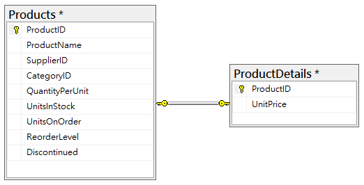
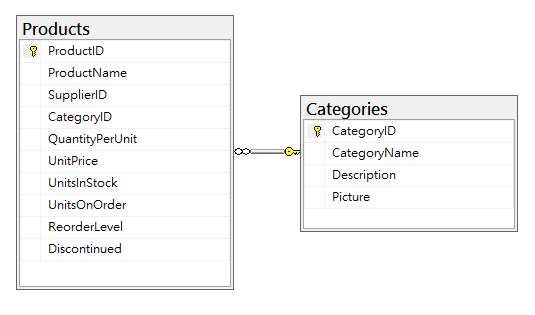
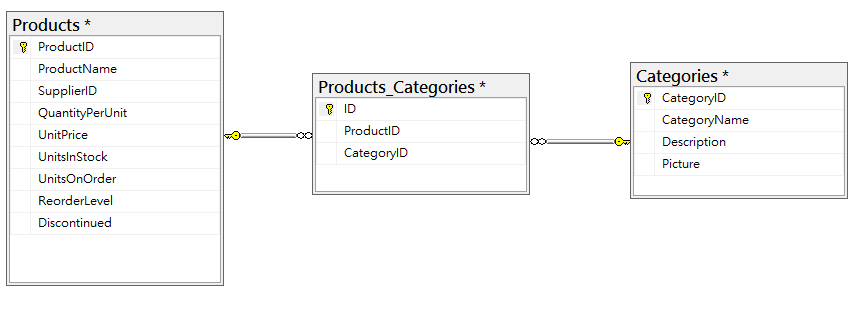

概述
前一篇介紹 Primary Key 及 Foreign Key，也初步了解什麼是關聯。其實關聯還可分為一對一關聯、一對多關聯和多對多關聯等三種對應方式。（一對多和多對一是一樣的）
一對一
兩張資料表在特定的欄位下，只能進行一對一的對應，即一筆紀錄只能對應一筆紀錄，通常可以看成兩張資料表內有一樣的 Primary Key 且互相對應。
兩資料表之間的關聯屬於一對一的情況比較少使用，大多數都是都是將欄位切割到另一個資料表，你可能會想為何不放在同一張資料表就好？我一開始也是這麼想的，畢竟在一對一的關係中拆成兩張資料表，有時會看得霧煞煞，但有時也是有這樣的需求，比方：某些欄位是較機密，需特定使用者才可查閱，這樣的例子有著安全性的特殊考量，非常適用一對一關聯。

一對多
表示在兩張資料表內，某資料表的一筆紀錄可以對應到另一張資料表的多筆紀錄，形成一對多的動應關係，在使用上也是最常見的一種。
在前篇使用 Northwind 案例的 Products 和 Categories 即是一對多的對應關係，這邊再次強調，一個分類可以對應到多個產品，也等同多個產品可以對應到同一個分類，前者可以表示為一對多，後者可稱為多對一，兩個形式上則是相同的。

多對多
多對多的關係相較前面兩項就較為複雜，所以在處理上也容易發生問題，通常會在切割一張資料表，做為兩張資料表間的關聯，產生一對多和多對一的關係。
舉例：在 Products 和 Categories 之間若為多對多關係，表示一個產品可以同時擁有多個分類，如：充電式手機支架可以分類在手機支架和充電器材下；一個分類下可以同時擁有多項產品，這樣就形成多對多的關係，這樣的情況下，通常會在建立一個資料表做為中介，讓兩張資料表之間不那麼複雜，且也相較好處理。

六月的到來，代表今年即將走完一半，時間眨眼即逝，今年要做的事才悄悄的有個起步，得加緊腳步別讓時間給追上！